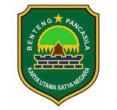

-
- Informasi Pribadi
- Tempat, Tanggal Lahir: Subang, 14 Desember 2005
- Kelamin: Laki-laki
- Agama: Islam
- Alamat: Wanajaya 019/005, Ciasem Tengah, Ciasem, Subang, Jawa Barat 41256
- Site: https://yazidabdulkodir.github.io/
- Facebook: Yazid AK
-
- Pengalaman Kerja
Praktek Kerja Lapangan, Kantor Pemerintah Desa Ciasem Tengah
-
Staf Pelayanan Masyarakat
Bekerja sama dengan perangkat desa untuk membantu dan melayani masyarakat.
Membuat dan meregistrasi surat.
Menginpput data DHKP ke Excel.
- Pengalaman Organisasi
 Tutor Matrikulasi Bahasa Indonesia, SMK Pertiwi Sukamandi
Tutor Matrikulasi Bahasa Indonesia, SMK Pertiwi Sukamandi-
Tutor Matrikulasi Bahasa Indonesia
Membantu guru bahasa Indonesia dalam memberikan tugas menulis dan membaca dalam bahasa Indonesia untuk para peserta siswa baru.
- Pendidikan
-
SMK Pertiwi Sukamandi, Teknik Komputer dan Jaringan (2021-2024).
-
SMPN 3 Ciasem (2018-2021).
-
SDN Trijaya Ciasem (2012-2018).
- Kemampuan
-
Mampu mengoperasikan kompuer dengan baik.
-
Mampu mengoperasikan Microsoft Word seperti membuat dokumen teks, membuat laporan, kop surat.
-
Mampu mengoperasikan Microsoft Excel seperti membuat tabel data, mengisi, mengelola data.
-
Bekerja dalam tim, dan individu.
-
Bekerja dengan instruksi dan saran.
- Sertifikat
Sertifikat Praktek Kerja Lapangan
-
Kantor Pemerintah Desa Ciasem Tengah.